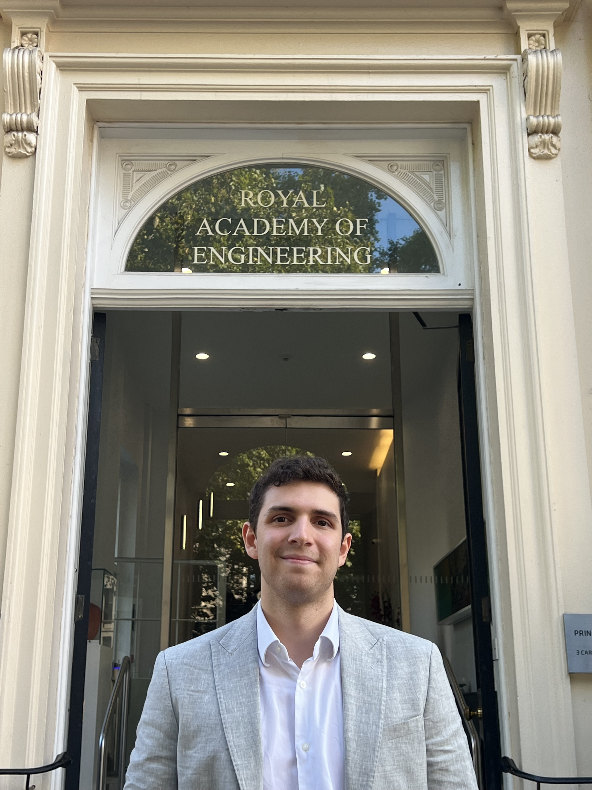

I'm Alex, a robotics engineer working at a startup in London, and recent
graduate of the University of Cambridge - who awarded me a scholarship to come here to Harvard.
My studies over the past few years have been in Aeronautical Engineering and then
Computational Engineering, which I have loved, but I have also always enjoyed more manual work at the
intersection of design and technology.
For as long as I can remember, I have always wanted to have full ownership of my
own project that combines physical design with computer hardware and software
engineering. I often have lots of ideas for solutions that combine these areas,
but have been too apprehensive to develop them, so I am hoping this course will
give me the platform and confidence to do this.
A dream of mine is to start my own company in the field of augmented reality, and
I have some ideas that will drive my final project, that could be a starting point for this.
Outside of studies and work, I am a passionate tennis player, alongside squash and badminton.